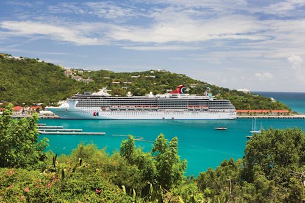
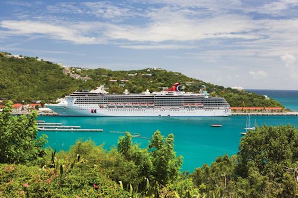

Nos hôtels de 4 et 5 étoiles accompagné des plus éclatante plages
-
 

Labadee
Labadee, Haïti est la station de croismediaière privée de Royal Caribbean avec toutes les attractions de plage, les sports nautiques et les activités amusantes que les croiseurs attendent avec impatience. Les destinations insulaires privées sont des ports d'escale populaires pour les croisières dans les Caraïbes, mais Labadee, Haïti est un peu différent. Ce complexe de 260 acres se trouve en fait sur une péninsule côtière plutôt que sur une île privée.
-

ABAKA BAY
Situé à Anse Dufour dans la localité de Kakok, crée il y a plus de 4 ans sur l’île, 15 chambres, dont 5 sont luxueuses, a été voté la 57ème meilleure plage du monde
-


decameron, lieu de rêve
Le nouveau Royal Decameron Indigo Beach Resort & Spa, premier hôtel 4 hibiscus tout compris en Haïti, un complexe touristique logé au cœur d’un parc de plus de 55 hectares, bordé de 1,5 kilomètres de plage de sable blanc est situé sur la côte des Arcadins, à 90 minutes de l'Aéroport International Toussaint Louverture et du centre historique, est le premier tout inclus en Haïti.
Avec ses 408 chambres de standard international, la plupart d'elles donnant sur la mer, sur le parc et sur la piscine ses 4 bars, ses 3 restaurants pouvant desservir 800 clients, ses 2 piscines extérieures, 2 salles de Gym, son SPA, une marina et des attractions aquatiques, le rêve est devenu une réalité -


Le site comporte quatre bassins
Le bassin Cheval, profond de 9 pieds (soit 2.7 mètres) ; Le bassin Yes, profond de 15 pieds (soit 4.6 mètres) ; Le bassin Palmiste, profond de 57 pieds (soit 17.4 mètres) ; Le bassin Clair, profond de 75 pieds (soit 22.8 mètres). Ce dernier est de loin le plus connu et le plus spectaculaire : avec une chute d'une dizaine de hauteur qui tombe dans un bassin d'une eau bleu turquoise.
-


saut d'eau le lieu qui fait penser a nos origines
A chaque week-end de la mi-juillet, les pèlerins se mêlent dans les eaux de la cascade de Saut-d'Eau où ils confient leurs désirs de vie meilleure à Erzulie, la déesse de l'amour dans le panthéon vodou
La cascade magique, où se trouve l'esprit d'Erzulie, on y va pour danser, pour chanter et pour conjurer le mal", explique Erol Josué, directeur du bureau national d'ethnologie qui est aussi un hougan, un prêtre vodou.